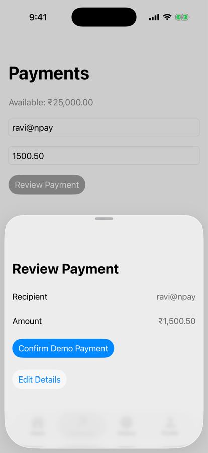
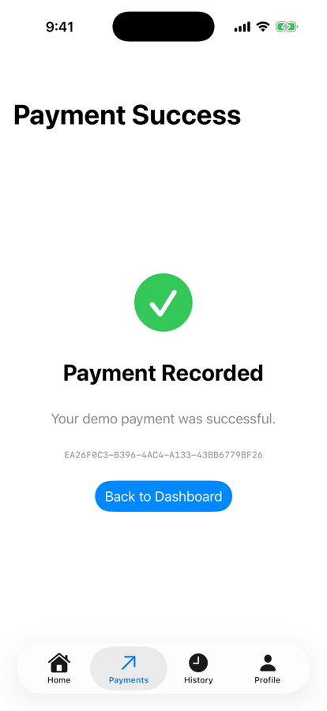

Part 1 · Our NPay milestone (section 1)
Form → review → confirm → success
The challenge
- Show a review temporarily
- Without pushing onto the Payments stack
Today’s APIs
sheet,fullScreenCover,alert,confirmationDialog- Presentation state and dismissal

3.3: records on tap

3.4: a review sheet
Part 2 · What is a sheet? (section 2)
A Bool presents it; dismissal writes it back
SheetExperiment.swift
struct SheetExperiment: View {
@State private var showSheet = false
var body: some View {
Button("Review Payment") {
showSheet = true
}
.sheet(isPresented: $showSheet) {
Text("Payment Review")
.font(.title)
.presentationDetents([.medium, .large])
}
}
}A sheet
- Modal: over the current interface
- A focused task, not a step deeper
onChange(of: showSheet), simulator
tap Review Payment → showSheet: true
swipe down → showSheet: false

Medium detent
Part 3 · How dismissal works (section 5)
dismiss() asks; it changes no business state
Dismissing from inside
struct ReviewSheet: View {
@Environment(\.dismiss) private var dismiss
var body: some View {
VStack(spacing: 20) {
Text("Review Payment")
Button("Cancel") {
dismiss()
}
}
}
}What happens
dismisscomes from the environment (as in 2.6)- Calling it requests dismissal
- The parent’s data is untouched
NPay: Edit Details calls dismiss()
recipient "ravi@npay", amount "1500.50"

Back on the form
Part 4 · fullScreenCover and alert (sections 7–8)
The whole screen, or one decision
fullScreenCover
@State private var showFullScreen = false
.fullScreenCover(isPresented: $showFullScreen) {
Text("Full Screen Payment Flow")
}Use for
- Immersive flows: onboarding, sign-in
- Not our review: a sheet fits
Full screen
alert
Button("Delete Draft") {
showAlert = true
}
.alert("Delete payment draft?", isPresented: $showAlert) {
Button("Delete", role: .destructive) {
print("Draft deleted")
}
Button("Cancel", role: .cancel) {}
} message: {
Text("This action cannot be undone.")
}Simulator
tap Delete → Draft deleted

Alert
Part 4 · confirmationDialog, and which to use (section 9)
Related actions; then the whole menu
confirmationDialog
Button("Payment Options") {
showOptions = true
}
.confirmationDialog(
"Choose an action",
isPresented: $showOptions
) {
Button("Save Draft") {
print("Draft saved")
}
Button("Discard", role: .destructive) {
print("Draft discarded")
}
}Simulator
actions: Save Draft, Discard, Cancel
tap Save Draft → Draft saved

Dialog
| API | Best suited for |
|---|---|
.sheet() | Custom temporary workflows |
.fullScreenCover() | Immersive modal experiences |
.alert() | Important messages or simple confirmations |
.confirmationDialog() | Choosing among related actions |
Part 8 · The flow, run (complete code)
₹1,500.50 to ravi@npay, reviewed

1. Form
2. Review

3. Confirm → Success

4. Home: ₹23,499.50

5. History